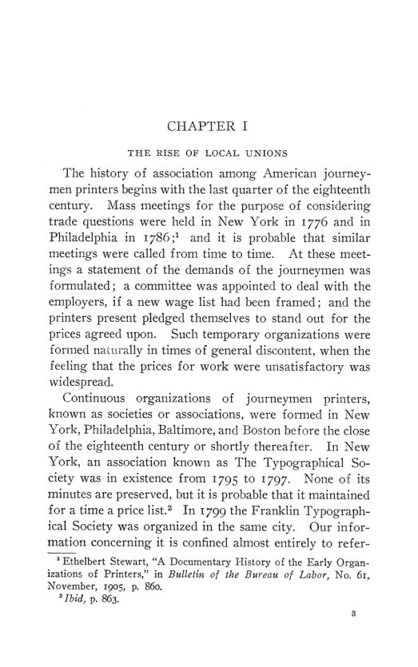

Barnett, 1909: os tipógrafos e a anatomia de um sindicato
Leitura: 11 min
Em 1909, George E. Barnett descreveu por inteiro um sindicato americano, o dos tipógrafos: filiação, finanças, pensões, salário mínimo, aprendizado, a linotipo e a greve pelas oito horas.


Em 1891, a International Typographical Union pôs em votação a jornada de nove horas. A proposta recebeu 9.340 votos a favor e 3.556 contra, e mesmo assim foi declarada derrotada. O presidente, William B. Prescott, entendeu que a mudança levaria a greves e que, pelas regras do sindicato, nenhuma greve podia ser autorizada sem maioria de três quartos.
O episódio está em The Printers: A Study in American Trade Unionism, de George E. Barnett, da Universidade Johns Hopkins, publicado em outubro de 1909 como o nº 3 do vol. 10 da terceira série do American Economic Association Quarterly. No prefácio, Barnett observa que os estudos anteriores tratavam de um aspecto do sindicalismo ou de uma política de um sindicato. O seu tem outra ambição.
“dar uma descrição completa de um sindicato americano” (“to give a complete description of an American trade union”)
Escolheu os tipógrafos porque sua história é longa, e porque seus registros, locais e nacionais, foram mais bem preservados que os de qualquer outro sindicato do país. Usou atas das sociedades de Nova York e Filadélfia, os anais do sindicato internacional, decisões e correspondência inéditas e as atas do comitê executivo da United Typothetae, a associação dos donos de gráficas. São 18 capítulos em três partes: história e governo; seguro mútuo e regras de trabalho; e os meios de fazer cumprir essas regras. Para classificar as funções do sindicato, segue, até onde o material permite, Sidney e Beatrice Webb em Industrial Democracy.
Como nasceu o sindicato nacional?
As primeiras sociedades de oficiais tipógrafos aparecem em Nova York, Filadélfia, Baltimore e Boston na virada do século XIX. A Philadelphia Typographical Society, de 1802, e a New York Typographical Society, de 1809, ainda funcionavam em 1909. A organização nacional nasceu de uma convocação feita em 1º de novembro de 1850 pelos sindicatos de Boston, Nova York e Filadélfia, e sua primeira sessão se reuniu em Cincinnati em 3 de maio de 1852. Barnett nota que os fundadores imitaram de perto a Convenção que redigiu a Constituição americana: o estatuto só valeria depois de ratificado pelos sindicatos de cinco estados, embora não houvesse organização estadual de tipógrafos.
Quantos eram os sindicalizados?
A filiação acompanha o ciclo econômico. Em 1860 havia 34 sindicatos locais com 3.492 membros; em 1862, com a Guerra Civil, restavam 1.585. Na depressão de 1873 a 1878, o número caiu de 9.797 para 4.260, mais da metade; na de 1893 a 1897, o recuo foi de cerca de um décimo. Em 1905, eram 654 sindicatos locais com 45.435 membros.
Como o sindicato pagava as contas?
A receita regular vinha da taxa per capita que cada local pagava por membro. Em 1908, eram 45 centavos, mais meio por cento dos salários, cobrado para financiar pensões. Barnett descreve a passagem de uma taxa sobre a receita dos locais para a taxa per capita e, por fim, para uma combinação de capitação e imposto sobre a renda. As grandes despesas vinham das contribuições especiais votadas em referendo.
Que proteção o sindicato oferecia?
As primeiras sociedades davam igual peso ao auxílio mútuo e à defesa dos preços: pagavam ajuda a doentes e auxílio-funeral. O sindicato internacional ficou com três benefícios. O primeiro é o auxílio-funeral, que custava entre 72 e 92 centavos por membro ao ano. O segundo é o Printers’ Home, em Colorado Springs, aberto em 12 de maio de 1892 para membros incapacitados por idade ou doença com cinco anos de filiação contínua. O terceiro é a pensão por velhice.
Aprovada em 1907, a pensão pagava US$ 4 por semana a membros com 60 anos e vinte de filiação contínua que não conseguissem emprego capaz de sustentá-los; os pagamentos começaram em 1º de agosto de 1908. Barnett liga a decisão a dois choques que atingiram sobretudo os mais velhos: a substituição dos compositores manuais pela linotipo e a greve pelas oito horas, depois da qual muitos não voltaram a encontrar emprego. Na casa e na pensão, conclui, os tipógrafos foram pioneiros entre os sindicatos americanos.
Como se fixava o salário?
A regra mais antiga é a do salário-padrão: nenhum membro podia trabalhar abaixo da tabela. Em 1802, um sócio da sociedade de Filadélfia foi julgado por violar os preços estabelecidos. O pagamento era por peça, medido em ems, unidade de área da composição: em Filadélfia, em 1802, o compositor recebia 25 centavos por mil ems e ainda distribuía os tipos, tirava prova e corrigia os próprios erros. As tabelas sempre foram assunto local. Em 1899, o secretário J. W. Bramwood informou que, entre os locais que tinham passado de dez para nove horas, 30 haviam reduzido o salário semanal, 7 o haviam aumentado e os demais o mantiveram.
Como os tipógrafos chegaram às oito horas?
Primeiro vieram as nove horas. A tentativa de 1887 fracassou, e a de 1891 parou na exigência de três quartos. Nos jornais, a linotipo facilitou as coisas: como a máquina dispensava a distribuição dos tipos, a jornada de oito horas para operadores entrou quase sem greves. Nas oficinas de livros e serviços avulsos, o acordo de Syracuse, de setembro de 1898, com a United Typothetae, fixou a semana de 57 horas a partir de 21 de novembro de 1898 e a de 54 horas um ano depois.
Para as oito horas não houve acordo. Uma proposta submetida aos membros em 1904, e aprovada por ampla maioria, marcou a data de 1º de janeiro de 1906 e criou uma contribuição prévia para sustentar greves. Em 17 de novembro de 1904, só 79 sindicatos locais tinham todos os membros na jornada de oito horas. As greves começaram em Chicago em setembro de 1905; foi a única greve do sindicato que envolveu ao mesmo tempo locais de todas as partes de sua jurisdição, e a única disputa que reduziu o número de membros.
O que a linotipo fez com o ofício?
A linotipo, inventada por Mergenthaler em 1884, substituiu rapidamente a composição manual depois de 1890. Em 1889, o sindicato fixou sua política: as máquinas seriam operadas por tipógrafos, com salário regulado pelos sindicatos locais, e não por aprendizes. Prescott desaconselhou cortar o preço do trabalho manual para competir.
“o trabalho manual não tem a menor condição de competir com elas” (“hand work cannot begin to compete with them”)
Barnett lista os ganhos: jornada menor, fim do problema do trabalho de meninos na composição simples, emprego mais regular e salário dos operadores acima do que ganhavam os compositores manuais. O custo foi a intensidade: os operadores concordavam que o trabalho na máquina era muito mais exaustivo. Em 1908, 87% dos empregados em máquinas, nas cidades com sindicato local, eram sindicalizados, a maior proporção de qualquer ramo. Para o autor, a política funcionou por ter base econômica: as oficinas não sindicais também preferiam tipógrafos nas máquinas, porque a produção da linotipo depende da habilidade do operador.
Para que servia limitar os aprendizes?
Em cerca de três quartos dos sindicatos locais, a regra era um aprendiz para cada cinco oficiais; em Chicago, um para seis; em Nova York, um para oito. Barnett mostra a aritmética do prazo: com três aprendizes e quatro anos de aprendizado, saem quinze oficiais em vinte anos; com cinco anos, doze. Mas as oficinas pequenas e as não sindicais contratavam quantos aprendizes quisessem, o que tornava as regras quase inúteis para conter a entrada no ofício. O problema real, conclui, passou a ser a qualidade do treinamento, porque o oficial mal formado pressiona para baixo o salário mínimo.
“Trabalhadores medíocres estabelecem padrões salariais medíocres” (“Indifferent workmen establish indifferent wage standards”)
A frase é do presidente James M. Lynch. Em 1907, o sindicato criou uma comissão de ensino técnico, dirigida pelo ex-presidente Prescott, que contratou com a Inland Printer Technical School um curso por correspondência para oficiais e aprendizes.
Quem decidia as condições de trabalho?
A negociação coletiva foi apenas local até 1885. Com os jornais, o caminho foi a arbitragem: proposto em 1900, o acordo com a American Newspaper Publishers’ Association valia por um ano e cobria disputas sobre contratos em vigor. O de 1902, por cinco anos, passou a cobrir também novos contratos; antes de 1º de maio de 1902, a junta nacional decidira um único caso, e no ano seguinte decidiu doze. O terceiro acordo, de 1º de maio de 1907, trocou a arbitragem por juntas paritárias, com dois membros de cada lado nos locais e três de cada lado na junta nacional. As regras do sindicato internacional, como a “lei de prioridade”, ficaram fora de qualquer negociação. Por isso Barnett considera a negociação coletiva nos tipógrafos um desenvolvimento ainda incompleto.
Na minha leitura
Na minha leitura, o valor de método do livro está em tratar o sindicato como uma instituição com orçamento, sistema tributário e política de seguros, e não só como parte de um conflito. Barnett mostra como cada regra resolve um problema de medida: o salário por peça exige definir o em; o salário por tempo exige definir a jornada; a cobrança da taxa per capita exige o selo que permite conferir os membros. O sindicato aparece como um pequeno Estado, que precisa saber quantos são seus contribuintes antes de decidir o que pode financiar.
O segundo ponto, na minha leitura, é econômico. As regras que dependiam de restringir a oferta, como a proporção de aprendizes, falharam onde a entrada no ofício era livre, nas oficinas pequenas e não sindicais. A regra que funcionou, a de pôr tipógrafos nas máquinas, coincidia com o interesse do empregador. O teste de Barnett é simples e continua útil: uma regra sindical sem justificativa econômica tende a perder força com o tempo, e a que se mantém costuma ser aquela que o próprio mercado sustentaria.
Glossário
- Oficial (journeyman)
- trabalhador que completou o aprendizado e recebe o salário pleno do ofício.
- Salário-padrão (standard rate)
- salário mínimo fixado pelo sindicato, abaixo do qual nenhum membro pode trabalhar.
- Em
- unidade de área da composição tipográfica; o compositor por peça era pago por mil ems.
- Linotipo
- máquina de compor e fundir linhas inteiras de tipo, acionada por teclado.
- Taxa per capita (per capita tax)
- valor que cada sindicato local paga ao sindicato internacional por membro.
- Contribuição especial (special assessment)
- cobrança extraordinária, votada em referendo, para financiar greves ou obras.
- United Typothetae
- associação nacional dos donos de oficinas de livros e serviços gráficos avulsos.
- Lei de prioridade (priority law)
- regra que limita a demissão pelo chefe de oficina e dá preferência ao substituto da casa nas vagas regulares.
Fontes
- [The Printers: A Study in American Trade Unionism]: Preface (pp. v–vii). JSTOR · Internet Archive (PDF)
- The Printers: A Study in American Trade Unionism (pp. 3–379). JSTOR · Internet Archive (PDF)
- Sumário da edição no JSTOR: American Economic Association Quarterly, 3ª série, vol. 10, nº 3.
Documento em domínio público (EUA, publicado antes de 1931), via JSTOR Early Journal Content e Internet Archive. Resumo e comentário do autor deste site, sem afiliação com a American Economic Association. Encontrou um erro? Escreva: a correção é publicada no próprio texto, com data.
← Nº 99 · O Bulletin de junho de 1909: desemprego, salários e estatística Nº 101 · O Bulletin de setembro de 1909: censo, fumo e cidades →